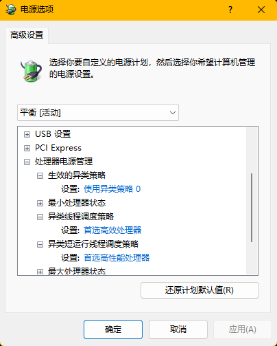

Intel大小核CPU在Windows上的优化
2026年07月13日 星期一通过修改Windows隐藏的电源设置，强制系统优先使用大核心（P核、性能核）。
打开隐藏的电源选项
以管理员身份运行命令提示符（CMD）或PowerShell，依次输入以下命令并回车：
powercfg -attributes SUB_PROCESSOR 7f2f5cfa-f10c-4823-b5e1-e93ae85f46b5 -ATTRIB_HIDE
powercfg -attributes SUB_PROCESSOR 93b8b6dc-0698-4d1c-9ee4-0644e900c85d -ATTRIB_HIDE
powercfg -attributes SUB_PROCESSOR bae08b81-2d5e-4688-ad6a-13243356654b -ATTRIB_HIDE
修改电源计划设置
打开“控制面板”-“硬件和声音”-“电源选项”，点击当前正在使用的电源计划（如“平衡”）旁的“更改计划设置”-“更改高级电源设置”。
在列表中找到“处理器电源管理”并展开，你会看到新出现的三个选项：
“生效的异类策略”：设置为“使用异类策略0”。
“异类线程调度策略”：设置为“首选高性能处理器”。
“异类短运行线程调度策略”：设置为“首选高性能处理器”。
